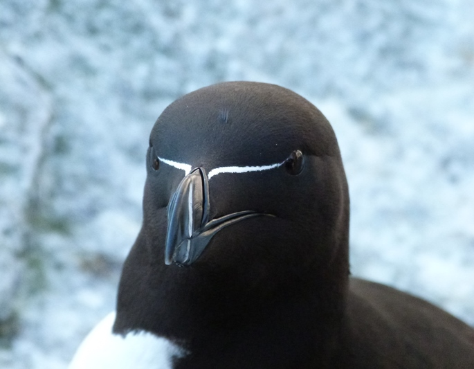
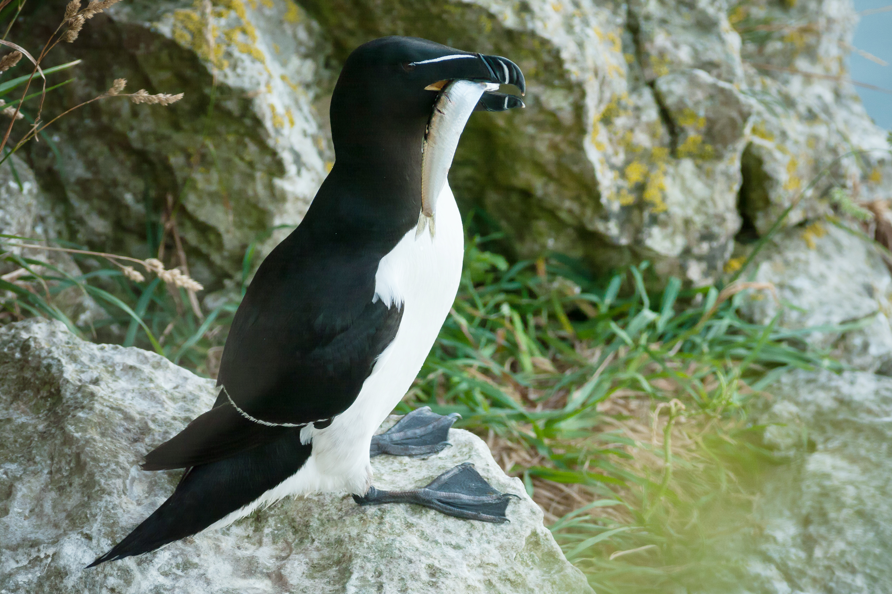

Home
Sobre
Avaliações
Endereço
Login
RAZOR BYTE
agilidade natural, precisão digital
Sobre
nós


Conteúdos em
destaque
Projetos
O que os líderes fazem de diferente?
Saiba mais →
Cibersegurança
Transforme sua segurança digital
Saiba mais →
Login
Cliente
Entrar